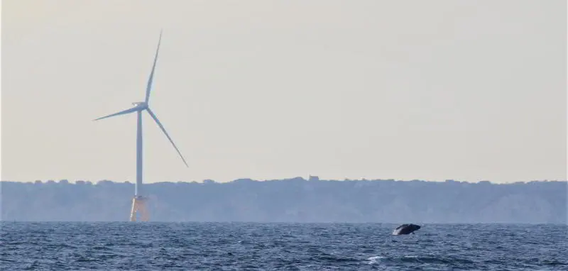

Do you love the ocean? Are you looking for an exciting new career that will allow you to travel and observe marine wildlife? Are you hard working, flexible and a team player? Then look no further and join the growing industry of Protected Species Observers (PSO)!
PSOs are certified industry professionals who are trained in identifying species of concern and applying their knowledge to protect them in the world of marine construction. Protected species include whales, dolphins, turtles, seals, birds, manatees and fish that are covered under the Endangered Species Act (ESA) and Marine Mammal Protection Act (MMPA). PSOs are responsible for monitoring marine construction work sites for the presence of protected species and implementing mitigation procedures to minimize the impact of noise on these animals.
Our PSO training curriculum was created by National Marine Fisheries Service (NMFS) approved PSOs and A.I.S. Inc. scientists, in consultation with BOEM, BSEE, and NMFS staff. Individuals that successfully complete the training and meet the minimum qualifications described below, may be eligible to serve on offshore enterprise projects as a professional PSO, compliant with BSEE and NMFS standards. Based in the U.S. Northeast, A.I.S. Inc. is located near one of the richest offshore wildlife refuges in the world. AIS is a nationwide leader in providing protected species monitoring services to government agencies and private companies operating in the marine environment and has been doing so since 1988.
The next virtual training session has been scheduled for November 28-30, 2023 and a future sessions is scheduled for January 23-25, 2024. The course takes approximately 20 hours to complete. It will be hosted live and enrolled students are expected to be in attendance on the dates when it occurs.
Please continue reading for additional information on the PSO training. If you’re ready to start the adventure now navigate to the REGISTER NOW button at the bottom of the page to pay for and enroll in the training.
The registration cost to complete our virtual training is $495 per person. This includes access to a virtual classroom where our highly experienced training staff will be teaching and interacting with trainees in real time. The fee also includes online access to the PSO Training Manual and one on one support during the training. Payments are processed via PayPal*. Once payment is received for the course there are no refunds.
A quality internet connection with the ability to connect to and stream the training via Microsoft Teams (Recommended minimum download/upload speeds of 2Mbps/2Mbps). You’ll need an email address and webcam to participate in the virtual training, and to access the online resources. The website is compatible with primary internet browsers (Chrome, Firefox, Edge) and operating systems (Mac, PC). Compatible devices include Windows and Apple computers as well as Android tablets/smart phones. Unfortunately due to formatting differences across platforms, iOS on iPhones and iPads is not supported. We also do not suggest completing the entire course on a mobile device, as it would likely reduce retention of information in comparison to completion on a larger device. Some course components may not be functional on out of date browsers, so we recommend updating your browser prior to starting the course.

To qualify for the PSO training you’ll need to provide a resume demonstrating an undergraduate degree in science or equivalent field experience, working with protected species. You will need to complete a PSO training with a passing grade of 80%. Ultimately in order to be considered for a job as a PSO, you will also need to complete the following:
-BOSIET or equivalent STCW offshore safety certification
-Medical Screening clearing you for sea duty
-If working as a PSO in the Northwest Atlantic region, an approval letter from the NMFS to work in the Northwest Atlantic
The course is broken down into 11 sections followed by a final test. Each lesson begins with an introduction and objectives, and then moves through materials associated with the theme of the section. There are some games and pop quizzes integrated into the training as well, to assist with comprehension.
This is a live training and you will not have the option to revisit or stop and start at a later date. Please keep this in mind when planning your schedule. The final test needs to be completed in one session within two hours, immediately after the training. You must achieve a grade of 80% on the final test to pass the course and receive your certification.
Students that complete the course with a passing grade on the final test will receive a certificate of completion via e-mail, and their name will be submitted to NMFS as a certified PSO.